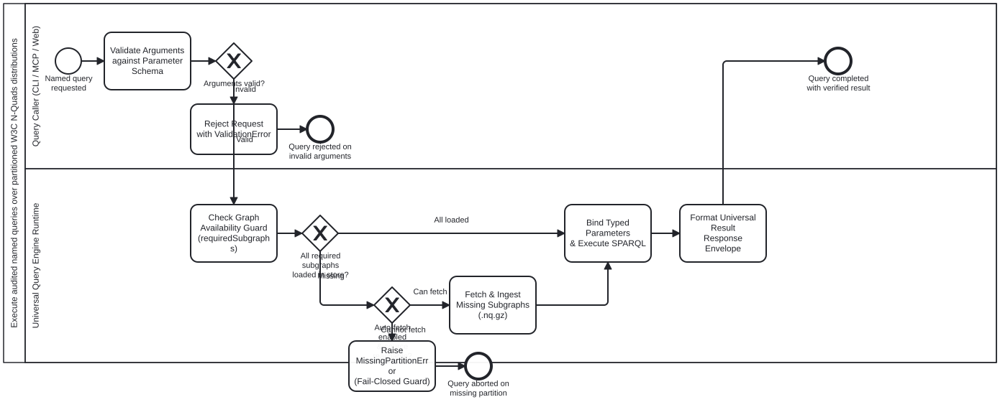

Generated from
cat-harness/skills/kg/graph-management/named-query-execution.md— do not edit here.
Named Query Execution across CLI, MCP, and Web
This skill governs the execution of audited SPARQL 1.1 named queries against partitioned W3C N-Quads distributions. It guarantees identical results and uniform I/O across Node/Bun CLI commands, agent MCP tools, and client-side browser WebAssembly.
1. Formal I/O Specification
The execution contract is defined in schemas/nquads-distribution.ts:
1.1 Request Input (NamedQueryRequest)
dataset: Path or HTTP URL tosubgraph-manifest.jsonor.nq.gzdistribution root.queryName: The identifier of the named query registered in the manifest.bindings: Key-value map of typed parameters (e.g.{"status": "todo", "minSiblings": 2}).format: Output representation:"table": Human-readable ASCII table."json": Structured JSON array of row objects."ids": Plain newline-separated list of target identifiers.
limit: Optional maximum number of rows to return.
1.2 Response Output (NamedQueryResponse)
queryName: Echoes the executed query identifier.datasetIri: The URI of the target dataset.quadsLoaded: Total number of RDF quads resident in memory during execution.loadTimeMs: Wall-clock time spent decompressing and parsing N-Quads into the engine.executionTimeMs: Wall-clock time spent evaluating the SPARQL query.totalRows: Number of result rows returned.rows: Array of key-value records representing the projected SPARQL variables.
2. Guardrails (Adversarial Mitigations)
2.1 Graph Availability Guard (Anti-Blindness)
- The Defect: If a query joins across
GRAPH <community/1>andGRAPH <community/2>, but Community 2 has not been loaded into memory, SPARQL silently returns empty results, falsely reading as “no records exist”. - The Guard: Before query execution, the engine inspects the query’s
requiredSubgraphsdeclared inNamedQueryDefSchema. If any required named graph is missing from the resident store, execution is refused withMissingPartitionError, indicating which.nq.gzpartition must be fetched first.
2.2 Injection-Proof Typed Parameter Binding
- The Vulnerability: Simple string replacement (
replaceAll("?$var", val)) permits SPARQL breakout injection. - The Guard: All parameters must be typed according to
QueryParameterDefSchema.type(string,iri,integer,boolean) and mapped to strict RDF Term representations:iri: Wrapped strictly as<${val}>after URL validation.string: Quoted with full W3C SPARQL string escaping (\",\n,\t,\uXXXX).integer: Validated as numeric and suffixed with^^xsd:integer.boolean: Validated as"true"^^xsd:booleanor"false"^^xsd:boolean.
2.3 Named Graph Pattern Matching
- The Contract: W3C N-Quads explicitly serialize statements into target named graphs (
<subject> <predicate> <object> <graphIri> .). - The Rule: In W3C SPARQL 1.1, queries evaluating against named graphs in a dataset store must use graph patterns
GRAPH ?g { ... }orGRAPH <targetGraphIri> { ... }. Evaluating triple patterns outside aGRAPHblock only matches the default graph, which is empty when statements are partitioned into named subgraphs.
3. Triple Context Wiring
[NamedQueryRequest]
│
┌────────────────────────┼────────────────────────┐
▼ ▼ ▼
[ CLI ] [ MCP ] [ Web ]
bun run nquads:query nquads_query WebNQuadsClient
│ │ │
▼ ▼ ▼
[Node Oxigraph Store] [Agent Tool Invoker] [WASM Oxigraph Store]
(Local /dist/ files) (JSON RPC Handler) (HTTP fetch .nq.gz)
│ │ │
└────────────────────────┼────────────────────────┘
▼
[NamedQueryResponse]
3.1 CLI Invocation
# Query dataset for items tagged with MeSH term
bun run nquads:query --dataset <path/to/oxigraph> --named search_by_mesh --param term="Vaccines"
# Query Beans for actionable unblocked leaf items
bun run beans:query --named actionable_leaves --format ids
3.2 MCP Tool Invocation (Agents)
Agents query the dataset using structured tool calls:
{
"tool": "nquads_query",
"arguments": {
"dataset": "beans/dist",
"queryName": "safe_drain_candidates",
"format": "json"
}
}
3.3 Web Browser Invocation
Client-side web interfaces instantiate the shared WebNQuadsClient against GitHub Pages routes:
const client = new WebNQuadsClient('/dataset/dist/oxigraph');
await client.init(); // Loads Tier 1 Spine (dataset-spine.nq.gz)
const results = await client.runNamedQuery('search_by_mesh', { term: 'Vaccines' });
Processes that run this skill
This skill has its own process: Execute audited named queries over partitioned W3C N-Quads distributions.

| process | step(s) that name it |
|---|---|
| Execute audited named queries over partitioned W3C N-Quads distributions | Validate Arguments against Parameter Schema; Reject Request with ValidationError; Check Graph Availability Guard (requiredSubgraphs); Fetch & Ingest Missing Subgraphs (.nq.gz); Raise MissingPartitionError (Fail-Closed Guard); Bind Typed Parameters & Execute SPARQL; Format Universal Result Response Envelope |
| Package and distribute partitioned W3C N-Quads and named queries | Declare Distribution Manifest & Named Queries; Verify Queries via CLI & Test Graph Availability; CI Gate Verification: Audit Manifest & Schemas |